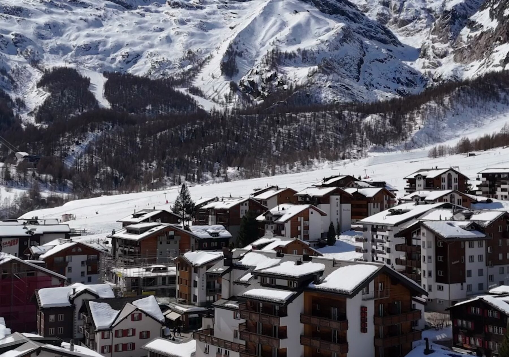
Bijou du Glacier
A four-bedroom apartment at the foot of the Allalin glacier, in the car-free Pearl of the Alps.
Book direct — best available rate
Booking direct means no platform commission: a better price for you, and a better stay for us to look after.
The apartment
Quiet, bright, and a few minutes' walk from the snow
Bijou du Glacier occupies a newly renovated floor of Residence de Glaser, in the heart of Saas-Fee. Four bedrooms, each with a large king-size bed. Oak floors, pale stone, brushed brass, and windows that frame the mountains rather than compete with them.
The design is deliberately restrained — modern alpine rather than carved-pine cliché. Spacious enough that eight people can share it without ever feeling on top of one another: an open-plan living room and kitchen, a long walnut table that seats the whole party, and a balcony that looks straight out at the peaks.
Outside the door is Saas-Fee itself. No cars, no traffic, no engine noise — just the crunch of boots on snow, and the lifts a short walk away.
Gallery
Inside Bijou du Glacier
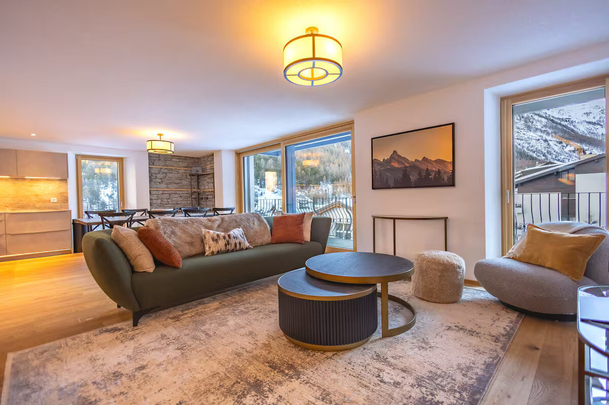
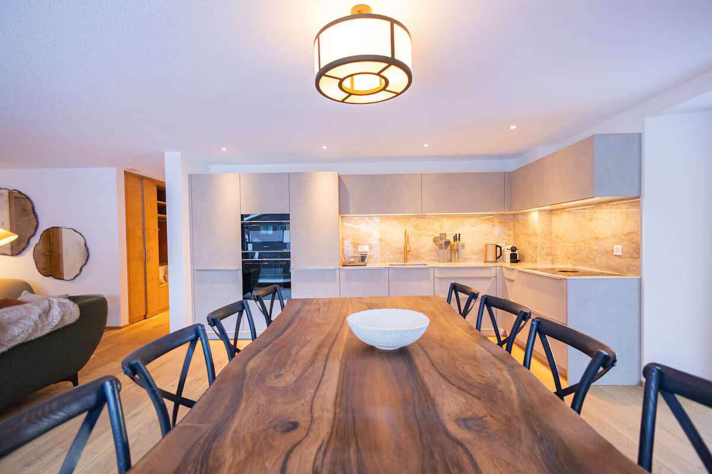
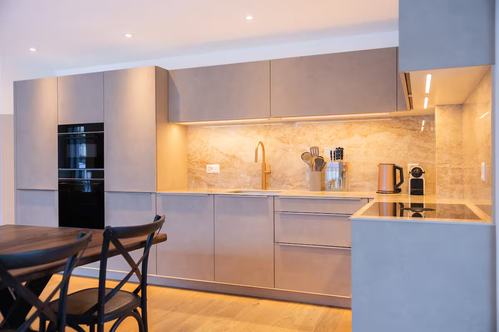
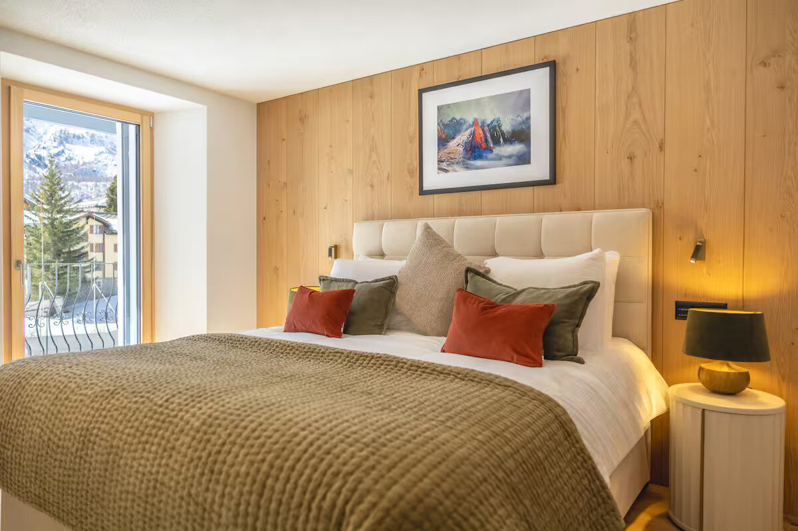
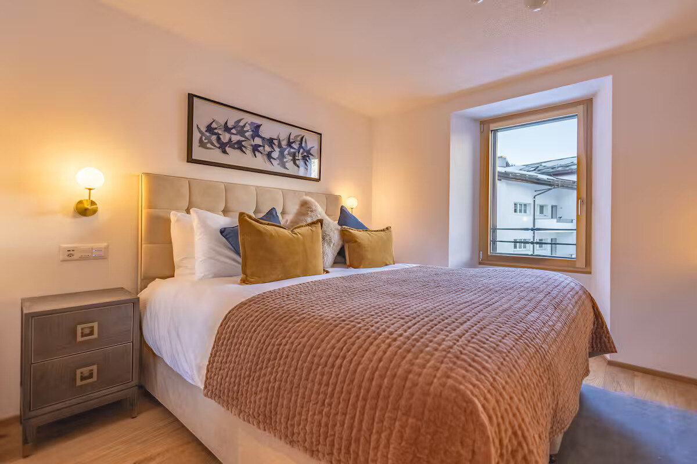
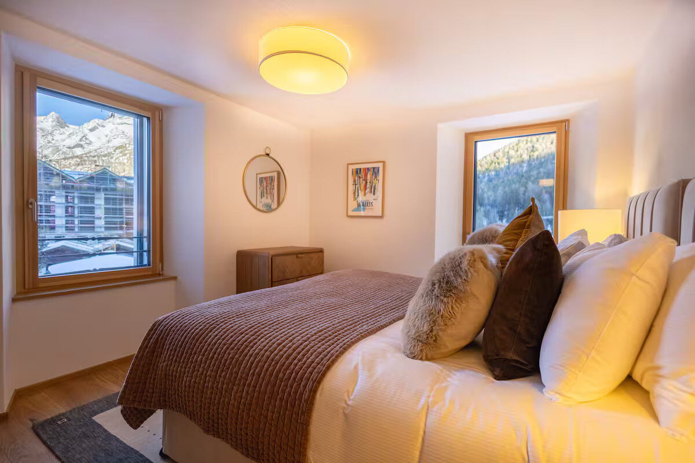
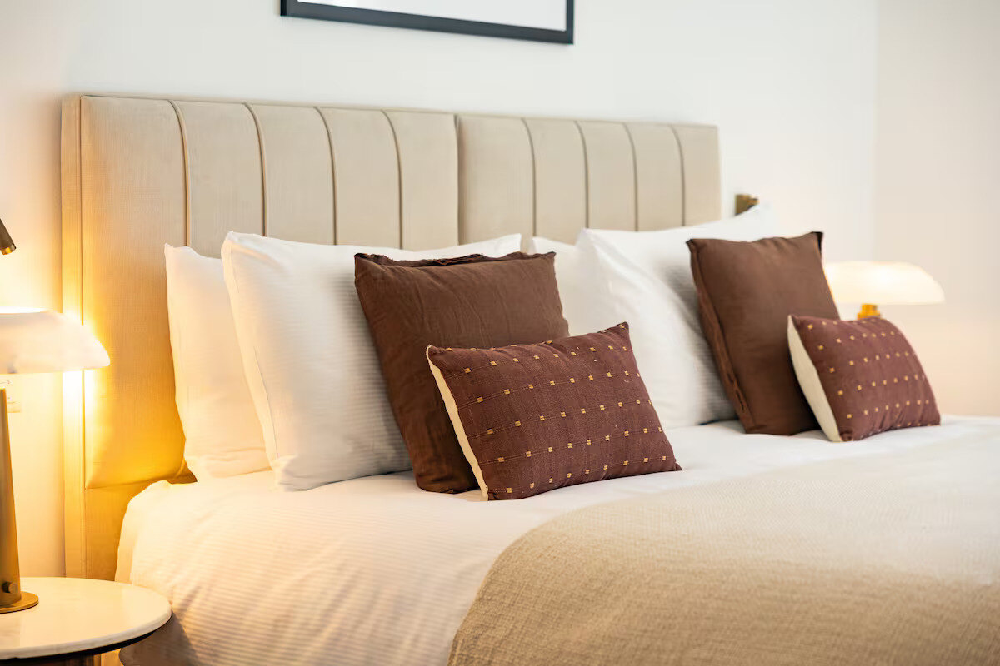
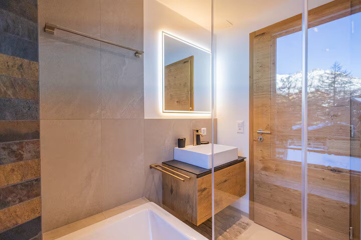
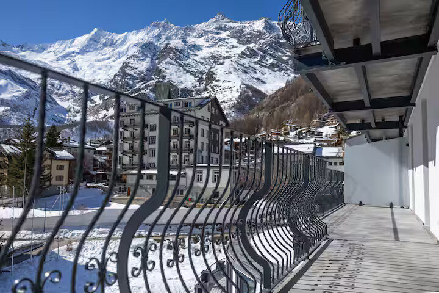
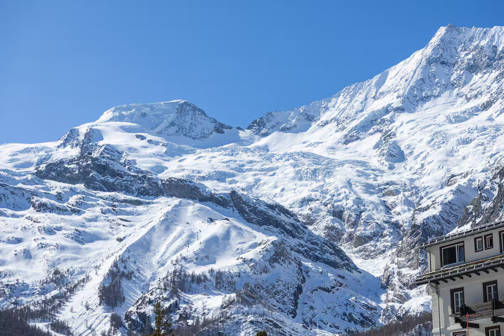
The detail
The apartment
Space and sleeping
Four bedrooms, each with its own large king-size bed, sleeping eight guests in comfort. Every bedroom is a real room with a window and daylight — not a converted corner.
The living space is genuinely spacious: an open-plan sitting area and kitchen that share the same light, so the group can cook, eat, read and talk without anyone being sent elsewhere.
Design
Newly renovated throughout, in a clean and classic mountain register. Wide oak boards, pale stone surfaces, brushed brass, and textiles in olive, rust and ochre. Warm, but modern and elevated — not rustic pastiche.
Bathrooms are finished in large-format stone and dark slate, with a bathtub, a walk-in shower and backlit mirrors.
Where it sits
Residence de Glaser sits within the village itself, walkable to the ski facilities and lifts, and to Saas-Fee's restaurants and shops. In a car-free village, walkability is the whole point — you arrive, you park outside the village, and you don't think about transport again.
Living and eating
A fully fitted kitchen with oven, induction hob, coffee machine and full glassware, and a long walnut dining table with seating for the whole party. A covered balcony runs along the front of the apartment, facing the mountains.
The village
Saas-Fee
The car-free village
Saas-Fee is known as the Pearl of the Alps, and it is car-free. Visitors leave their vehicles at the edge of the village and continue on foot. The effect is immediate and hard to overstate: no engines, no fumes, no kerbs to watch for children on. The village stays quiet in a way that most alpine resorts no longer are.
Glacier skiing
The village sits in a horseshoe of high peaks beneath the Allalin glacier. The Metro Alpin — an underground funicular running up inside the mountain — carries skiers high onto the glacier, where the snow holds through the year. Saas-Fee is one of the few places in the Alps where glacier skiing is possible across the seasons rather than for a few weeks.
Summer in the mountains
In summer the same terrain becomes walking country: high paths through larch and rock, meadows below and ice above, with the lifts and the Metro Alpin still running for those who want to reach the glacier without the climb. Long days, cool nights, and the village at its most relaxed.
Eating and evenings
Restaurants sit within walking distance of the apartment, on and around the village's main street. Because nothing is more than a stroll away, dinner out never requires a plan — you walk down, you eat, you walk back.
Availability
Book your stay
The same apartment is available through several channels. Booking direct carries no platform commission, which makes it the best price available — and it is the option we would always point you to first.
Or find us on the booking platforms
Platform listings carry the platform's own service fees. The direct rate does not.